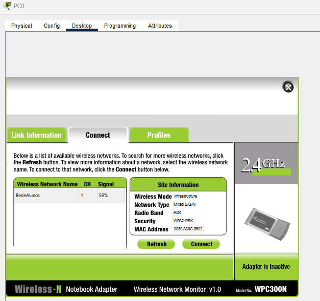
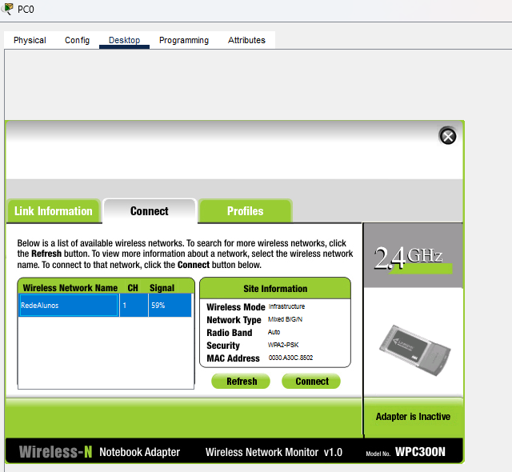
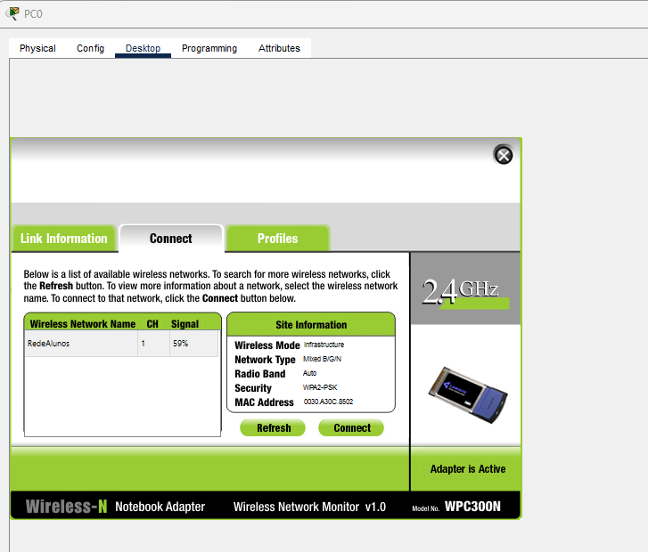
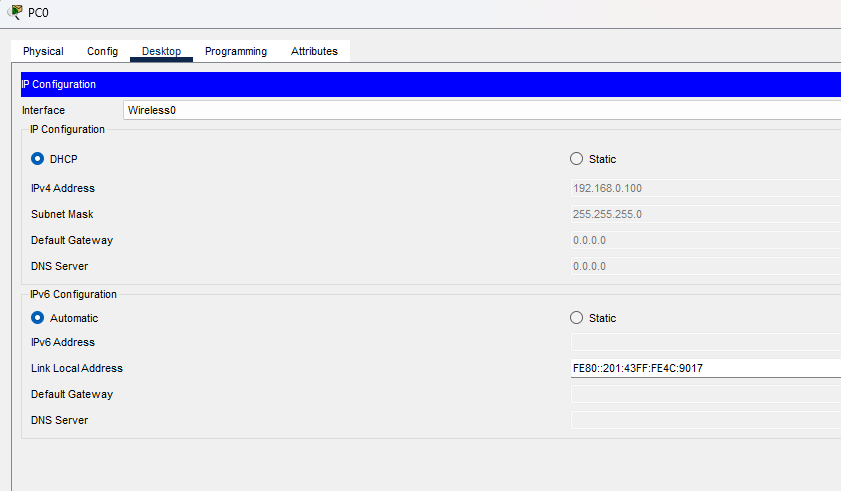

Rede Wi-Fi
Corporativa
Configure uma rede sem fio completa com LAP e WLC no Cisco Packet Tracer — um passo por tela.
Por que LAP + WLC?
Em ambientes corporativos, configurar cada Access Point separadamente seria inviável. Uma controladora centralizada resolve isso.
Inserindo os Dispositivos
Abra um novo arquivo em branco (File → New) e adicione os equipamentos. Não conecte nenhum cabo ainda.
| Equipamento | Categoria | Subcategoria |
|---|---|---|
Switch 2960 | Network Devices | Switches |
WLC-PT | Network Devices | Wireless Devices |
LAP-PT | Network Devices | Wireless Devices |
Server-PT | End Devices | End Devices |
PC-PT ×2 | End Devices | End Devices |

Preparação Física
Conecte os cabos, ligue o LAP e troque as placas de rede dos PCs.
Conectando os Cabos
Escolha o cabo Copper Straight-Through (ícone de raio laranja). Conecte:
Server0→ Switch0WLC-PT→ Switch0LAP-PT→ Switch0
Ligando o LAP
O LAP vem desligado por padrão. Clique nele → aba Physical → arraste a fonte de energia para o conector.

Trocando a Placa dos PCs
No PC0 e PC1: Physical → desligar (bolinha vermelha) → remover placa com fio → inserir WMP300N → ligar novamente.

Configurando os IPs
Defina os endereços IP estáticos do Servidor e da WLC.
IP do Servidor
Server0 → Config → FastEthernet0 → Static:
- IPv4 Address: 192.168.0.10
- Subnet Mask: 255.255.255.0

IP da WLC
WLC-PT → Config → Management:
- IPv4 Address: 192.168.0.20
- Subnet Mask: 255.255.255.0
Servidor DHCP
Configure o DHCP para distribuir IPs e informar ao LAP onde está a WLC.
DHCP no Server0
Server0 → Services → DHCP → Ative o serviço:
- Start IP Address: 192.168.0.100
- Subnet Mask: 255.255.255.0
- WLC Address: 192.168.0.20 ← campo mais importante!
Clique em Save para aplicar.

Criando a Rede Wi-Fi
Crie o SSID e a senha na WLC — ela distribui para todos os LAPs automaticamente.
WLC → Wireless LANs
WLC-PT → Config → Wireless LANs:
- Profile Name: RedeAlunos
- SSID: RedeAlunos
- VLAN:
1 - Authentication:
WPA2-PSK - PSK Pass Phrase: 12345678
Clique em Save.

Conectando os PCs ao Wi-Fi
Aguarde a sincronização LAP ↔ WLC e conecte os PCs à rede.
Fast Forward Time
Clique em >> (Fast Forward Time) na barra inferior para acelerar a sincronização entre LAP e WLC.
Conectar PC0 à RedeAlunos
PC0 → Desktop → PC Wireless → Connect → Refresh
Selecione RedeAlunos → Connect → senha 12345678




Verificação Final
Confirme os IPs e teste a comunicação entre os PCs.
IP Configuration
PC0 → Desktop → IP Configuration. Deve aparecer 192.168.0.100 via DHCP.

Conecte o PC1
Repita o Passo 6 para o PC1. Ele receberá 192.168.0.101 automaticamente.
Teste de Comunicação
No PC0 → Command Prompt:
ping 192.168.0.101Respostas Reply from... = rede 100% funcional! 🎉

Resumo da Configuração
Tabela de referência rápida com todos os endereços e configurações.
| Equipamento | IP | Método |
|---|---|---|
Server0 | 192.168.0.10 | Estático |
WLC-PT | 192.168.0.20 | Estático (Management) |
LAP-PT | 192.168.0.100 | DHCP |
PC0 | 192.168.0.100 | DHCP |
PC1 | 192.168.0.101 | DHCP |
Erros Comuns
Se algo não funcionou, verifique as soluções abaixo.
🔴 LAP sem sinal Wi-Fi
- LAP desligado: Verifique a fonte de energia (Passo 2.2)
- WLC Address: No DHCP, confirme que
192.168.0.20foi salvo - Fast Forward: Clique em
>>algumas vezes e aguarde
🟡 PC com IP 169.254.x.x
- Placa errada: Troque pela WMP300N e reinicie o PC
- DHCP off: Server0 → Services → DHCP → certify que está On
- Wi-Fi não conectado: Conecte-se à RedeAlunos primeiro
🔴 "RedeAlunos" não aparece
- WLAN não salva: Volte à WLC e clique em Save
- LAP não sincronizou: Aguarde ou use Fast Forward
🟡 Ping falha (Request Timeout)
- PC1 não conectado: Verifique se também passou pelo Passo 6
- Sub-redes diferentes: Ambos devem estar em 192.168.0.x
- Aguarde: 10-15 segundos após conectar o segundo PC
✅ Checklist Interativo de Bancada
Marque os passos validados no seu Packet Tracer:
Mini-Quiz: Arquitetura LAP + WLC
0 de 3 acertadasResponda às questões para consolidar o que você configurou:
1. Por que utilizamos LAP (Lightweight AP) associado a uma WLC em redes corporativas?
2. Qual a importância fundamental do campo WLC Address no Servidor DHCP?
3. O que é necessário fazer fisicamente nos PCs no Packet Tracer para habilitar o Wi-Fi?
Tutorial Completo!
Sua rede Wi-Fi corporativa está configurada e funcionando. Revise qualquer passo pelo menu lateral ou consulte os erros comuns.
Desenvolvido por Prof. Romulo Cesar — IFCE / Redes Cuca